Du lernst hier, wie Ladungen wirken, wie man sie nachweist und warum man den Raum um geladene Körper als elektrisches Feld beschreibt.
Elektrische Wirkungen sind oft unsichtbar. Verpackungschips kleben an der Haut, Haare stehen beim Bandgenerator ab, Blitze springen durch die Luft, und ein Elektroskop zeigt eine Ladung an, ohne dass du einzelne Elektronen sehen kannst. Die Physik beschreibt solche Vorgänge mit wenigen Grundideen: Ladung, Kraft, Feld und Energie.
Ladungsarten, Anziehung und Abstoßung, Ladungserhaltung, Elektroskop, Influenz, Feldstärke, Feldlinien, homogenes Feld und Faraday-Käfig.
Quantitative Kraft-Feldstärke-Zusammenhänge, Vektoraddition, Proportionalitätsnachweise, Feldlinienkonstruktionen und schwierigere Rechenaufgaben.
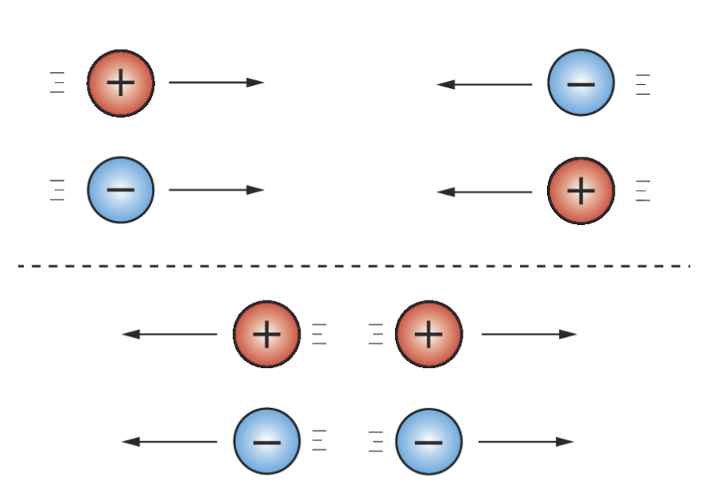
Oben ziehen sich positive und negative Ladungen an. Unten stoßen sich gleichnamige Ladungen ab. Die Pfeile zeigen die Richtung der elektrischen Kraft.
Jeder physikalische Körper besteht aus Atomen. Atome bestehen aus Elektronen, Protonen und Neutronen. Diese Teilchen unterscheiden sich unter anderem durch ihre elektrische Ladung. Elektronen sind negativ geladen, Protonen positiv, Neutronen sind elektrisch neutral.
Es gibt zwei Arten elektrischer Ladung: positive und negative. Gleichnamige Ladungen stoßen sich ab, ungleichnamige Ladungen ziehen sich an. Diese gegenseitige Kraftwirkung nennt man Wechselwirkung.
Ein Körper ist elektrisch neutral, wenn gleich viele positive und negative Ladungen vorhanden sind. Er enthält also Ladungen, zeigt aber nach außen keine elektrische Wirkung. Ein Körper ist negativ geladen, wenn er einen Elektronenüberschuss besitzt. Er ist positiv geladen, wenn ihm Elektronen fehlen.
Die Ladungsmenge wird mit \(Q\) oder \(q\) bezeichnet. Ihre Einheit ist Coulomb.
\([Q]=[q]=1\,\mathrm C\)
Eine Ladungsmenge wird also in Coulomb angegeben.
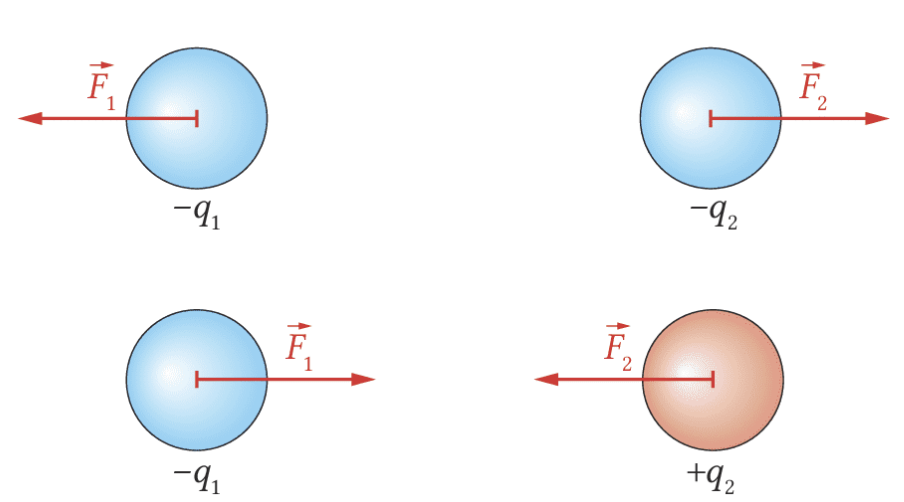
Die roten Pfeile sind Kraftvektoren. Ihre Richtung zeigt, wohin die jeweilige Ladung beschleunigt würde. Nach dem Wechselwirkungsprinzip sind die Kräfte auf beide Ladungen gleich groß und entgegengesetzt gerichtet.
Vergleicht man viele Anordnungen aus zwei kleinen geladenen Körpern, erkennt man drei Zusammenhänge: Eine größere Ladungsmenge \(q\) verstärkt die Kraft, eine größere Ladungsmenge \(Q\) ebenfalls. Vergrößert man dagegen den Abstand \(r\) der Ladungsmittelpunkte, wird die Kraft schnell kleiner.
\[F_\mathrm{heur}=\frac{q\,Q}{r^2}\]
Diese erste Formel zeigt nur die Abhängigkeiten: \(F\propto q\), \(F\propto Q\) und \(F\propto 1/r^2\). Sie ist in SI-Einheiten noch nicht vollständig, weil der notwendige Proportionalitätsfaktor fehlt.
Damit kannst du schon sicher vorhersagen: Verdoppelst du nur eine Ladung, verdoppelt sich der Kraftbetrag. Verdoppelst du den Abstand, sinkt der Kraftbetrag auf ein Viertel. Beim dreifachen Abstand bleibt nur ein Neuntel übrig.
Für zwei Punktladungen im Vakuum lautet der vollständige Zusammenhang:
\[\vec F_{q\leftarrow Q}=\frac{1}{4\pi\varepsilon_0}\,\frac{q\,Q}{r^2}\,\hat{\vec r}\]
Der Einheitsvektor \(\hat{\vec r}\) zeigt von der felderzeugenden Ladung \(Q\) zur betrachteten Ladung \(q\). Das Vorzeichen von \(qQ\) entscheidet: Bei \(qQ>0\) wirkt die Kraft in Richtung von \(\hat{\vec r}\), die Ladungen stoßen sich ab. Bei \(qQ<0\) wirkt sie entgegengesetzt, die Ladungen ziehen sich an.
Wenn nur der Betrag der Kraft gesucht ist, verwendest du:
\[F_\mathrm{el}=\frac{1}{4\pi\varepsilon_0}\,\frac{|q\,Q|}{r^2}\]
Dabei ist \(\varepsilon_0\) die elektrische Feldkonstante. Für sie und die daraus gebildete Coulomb-Konstante \(k\) gilt:
\[\varepsilon_0\approx 8{,}854\cdot10^{-12}\,\frac{\mathrm{C^2}}{\mathrm{N\,m^2}},\qquad k=\frac{1}{4\pi\varepsilon_0}\approx 8{,}99\cdot10^9\,\frac{\mathrm{N\,m^2}}{\mathrm{C^2}}\]
In Luft kann für schulische Rechnungen meist derselbe Wert verwendet werden. Das Gesetz gilt unmittelbar für Punktladungen und außerhalb kugelsymmetrischer Ladungsverteilungen. Die beiden Ladungen erfahren nach dem Wechselwirkungsprinzip gleich große, aber entgegengesetzt gerichtete Kräfte.
Es gibt positive und negative Ladungen. Gleichnamige Ladungen stoßen sich ab, ungleichnamige ziehen sich an. Der Kraftbetrag ist proportional zu beiden Ladungsmengen und umgekehrt proportional zum Quadrat ihres Abstands. Ladungen können transportiert, aber nicht erzeugt oder vernichtet werden: Die Gesamtladung bleibt in einem abgeschlossenen System erhalten.
Mit einem Elektroskop kannst du elektrische Ladungen nachweisen. Wird das Elektroskop geladen, verteilt sich Ladung auf dem leitenden Metall. Zeiger und Halterung tragen dann gleichnamige Ladungen. Weil gleichnamige Ladungen sich abstoßen, schlägt der Zeiger aus.
Besitzt das Gerät zusätzlich eine Skala, spricht man von einem Elektrometer. Für sehr kleine Ladungsmengen verwendet man Messverstärker. Solche Messungen sind empfindlich: Luftfeuchtigkeit, Berührungen oder statische Aufladung können das Ergebnis verändern.
Beim Ladungstransport werden meist Elektronen bewegt. Ladung „wandert“ also mit ihren Ladungsträgern. In einem elektrisch isolierten System bleibt die Gesamtladung erhalten. Wenn ein Körper Ladung abgibt, nimmt ein anderer Körper sie auf.
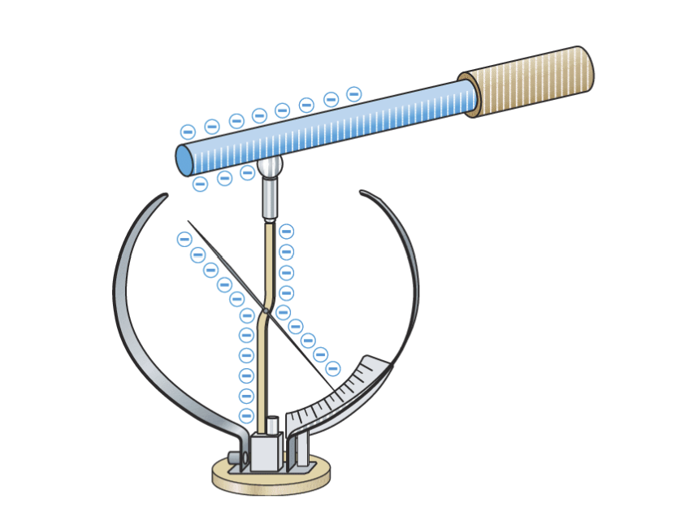
Zeiger und Halterung tragen gleichnamige Ladungen. Weil sie sich abstoßen, bewegt sich der Zeiger. Je größer der Ausschlag, desto stärker ist die elektrische Wirkung.
Ungleichnamige Ladungen ziehen sich an. Wenn du sie voneinander trennen willst, musst du gegen diese Anziehung arbeiten. Dabei wird Energie in das elektrische System gebracht. Lässt man die getrennten Ladungen später wieder zusammenwirken, kann diese Energie in andere Energieformen umgewandelt werden.
Dieses Prinzip steckt in Batterien, Netzgeräten und Kraftwerken. Beim Minuspol gibt es einen Überschuss an Elektronen, beim Pluspol einen Elektronenmangel. Verbindet man beide Pole über einen Verbraucher, kann elektrische Energie zum Beispiel in Licht, Wärme oder Bewegung umgewandelt werden.
Bei einer Steckdose wechseln die Pole viele Male pro Sekunde. Ein Netzgerät kann daraus je nach Bauart eine Gleichspannung mit festem Plus- und Minuspol bereitstellen.
Wie kann ein neutraler Metallring von einer geladenen Platte angezogen werden, obwohl seine Gesamtladung null ist?
In einem Metall können sich Elektronen durch den ganzen Körper bewegen. Kommt ein geladener Körper in die Nähe, übt sein elektrisches Feld Kräfte auf diese Elektronen aus. Sie verteilen sich neu, bis im Metall ein elektrostatisches Gleichgewicht erreicht ist. Die dadurch entstehende Ladungstrennung im Leiter heißt Influenz. Der Leiter wird dabei nicht automatisch geladen: Ohne Berührung und ohne Erdung bleibt seine Gesamtladung unverändert.
Bei einem nicht leitenden Stoff wie Glas können Ladungen nicht durch die ganze Platte wandern. Die gebundenen positiven und negativen Ladungsanteile können sich nur sehr wenig gegeneinander verschieben. Deshalb schirmt eine Glasplatte ein äußeres elektrisches Feld nicht einfach ab.
Nähere eine positiv geladene Platte einem neutralen Metallring. Die frei beweglichen Elektronen des Rings werden zur Platte gezogen. Auf der nahen Ringseite entsteht ein Elektronenüberschuss, auf der fernen Seite ein gleich großer Elektronenmangel.
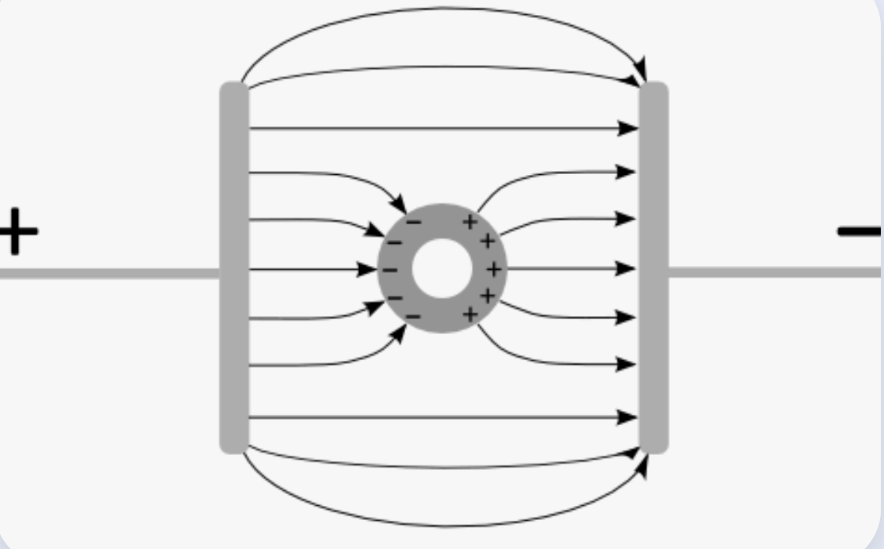
Die Feldlinien verlaufen von der positiven zur negativen Platte. Elektronen sammeln sich auf der linken Ringseite; rechts bleibt Elektronenmangel. Im leitenden Metall selbst verlaufen im elektrostatischen Gleichgewicht keine Feldlinien.
Im Randbereich einer endlichen Platte ist das Feld nicht überall gleich stark. Die entgegengesetzte Ladung auf der nahen Ringseite ist näher an der Platte als die gleichnamige Ladung auf der fernen Seite. Deshalb überwiegt dort die Anziehung. Bei einer negativ geladenen Platte werden alle Vorzeichen vertauscht; die Anziehung bleibt bestehen.
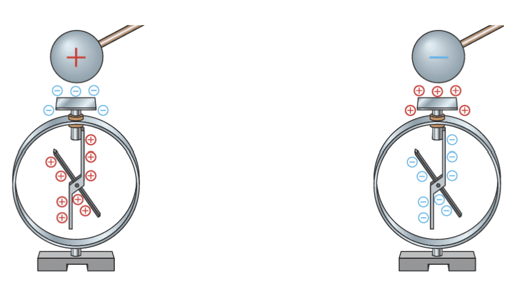
Eine geladene Kugel wird nur in die Nähe gebracht. Trotzdem verschieben sich im leitenden Elektroskop Elektronen. Dadurch entstehen getrennte Ladungsbereiche, ohne dass die Kugel das Elektroskop berühren muss.
| Zwischenstück | Was geschieht? | Begründung |
|---|---|---|
| Glasplatte | Der Metallring zeigt weiterhin eine Ladungstrennung. Stärke und Verlauf des Feldes ändern sich. | Glas besitzt keine frei durch die Platte beweglichen Ladungsträger. Das elektrische Feld wird daher nicht abgeschirmt. |
| Geerdetes Metallgitter | Das Feld hinter dem Gitter wird deutlich schwächer; die Wirkung auf den Ring nimmt stark ab. | Bewegliche Elektronen ordnen sich an der Metalloberfläche neu. Über die Erdverbindung kann Ladung zu- oder abfließen. Feldlinien enden beziehungsweise beginnen an den Oberflächenladungen. |
| Große Maschen oder Lücken | Ein Restfeld kann durch die Öffnungen reichen. | Ein Gitter schirmt weniger vollständig ab als eine geschlossene Metallfläche. Kleinere Maschen verbessern die Abschirmung. |
Wichtig: Ein ungeerdetes einzelnes Metallgitter und eine geschlossene geerdete Metallhülle sind nicht dasselbe. Für eine möglichst eindeutige Abschirmung verwendest du im Gedankenexperiment ein geerdetes Gitter.
Vergleiche zuerst ein Metallgitter mit unterschiedlich großen Öffnungen. Wechsle danach zum geschlossenen Faraday-Käfig. Beobachte an der gelben Probe, wie stark das äußere Feld hinter dem Gitter beziehungsweise in der Hülle noch wirkt.
Eine Kerzenflamme ist kein gewöhnliches neutrales Gas. Durch die hohe Temperatur enthält sie bewegliche Elektronen und Ionen. In einem äußeren Feld werden positive und negative Ladungsträger in entgegengesetzte Richtungen beschleunigt. Bei vielen Schulversuchen prägen die positiven Ionen die sichtbare Ablenkung: Ein negativer Körper zieht sie an, ein positiver stößt sie ab. Deshalb kann sich die Flamme je nach Ladung und Aufbau zum Stab hin oder von ihm weg bewegen.
Bei einer scharfen geladenen Metallspitze kommt ein zweiter Effekt hinzu. Auf engem Raum ist die Oberflächenladung dort besonders dicht und die elektrische Feldstärke sehr groß. Luftmoleküle können ionisiert werden. Die erzeugten Ionen werden beschleunigt und stoßen mit neutralen Luftmolekülen zusammen. So entsteht ein spürbarer elektrischer Wind, der eine Flamme zur Seite drücken oder sogar ausblasen kann. Gleichzeitig verliert die Metallspitze nach und nach Ladung an die Luft.
Ein elektrostatischer Propeller nutzt genau diesen Effekt. Seine Arme enden in scharfen, seitlich gebogenen Spitzen. An jeder Spitze entstehen Ionen, die in eine bevorzugte Richtung davonfliegen und die umgebende Luft mitnehmen. Nach dem Wechselwirkungsprinzip wirkt auf die Spitze eine entgegengesetzte Kraft. Weil die Spitzen gleichsinnig gebogen sind, erzeugen diese Kräfte zusammen ein Drehmoment: Der Propeller dreht sich entgegen der Richtung des Ionenwinds.
Versuche mit Hochspannung, offenen Flammen und Spitzenentladung führst du nur als beaufsichtigten Demonstrationsversuch durch. Auch bei kleiner Stromstärke können Funken erschrecken, Bauteile beschädigen oder brennbare Stoffe entzünden.
Weiterforschen: UCSB: Electrostatic Pinwheel · Purdue University: Electric Wind
Mit dem Coulomb-Gesetz auf Seite 2 hast du die direkte Kraft zwischen zwei Punktladungen berechnet. Jetzt wechselst du die Perspektive: Eine felderzeugende Ladung verändert den Raum um sich. Eine Probeladung erfährt dort eine elektrische Kraft. Um verschiedene Situationen vergleichen zu können, betrachtet man die Kraft pro Ladung. Diese Größe heißt elektrische Feldstärke.
\(F_\mathrm{el}=q\cdot E\)
Die elektrische Kraft ist Ladungsmenge mal elektrische Feldstärke.
\(E=\frac{F_\mathrm{el}}{q}\)
Die elektrische Feldstärke ist die elektrische Kraft pro Probeladung.
\([E]=1\,\mathrm{N/C}\)
Elektrische Feldstärke wird in Newton pro Coulomb angegeben.
Ist die Probeladung doppelt so groß und das Feld gleich, dann ist auch die Kraft doppelt so groß. Genau daran erkennt man die Proportionalität zwischen \(F_\mathrm{el}\) und \(q\).
Bei einer positiven Probeladung zeigen Kraft und Feldstärke in dieselbe Richtung. Bei einer negativen Probeladung zeigt die Kraft entgegen der Feldrichtung.
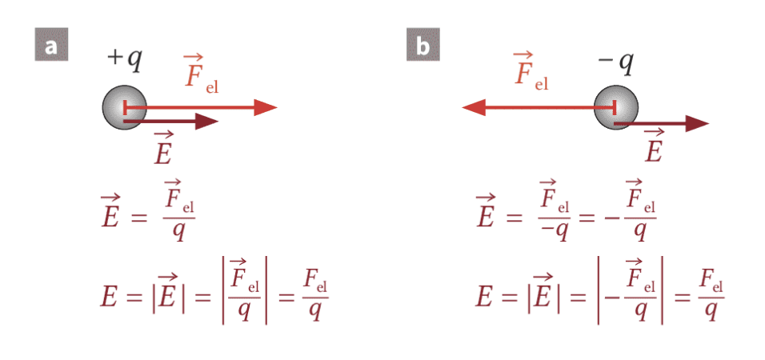
Bei einer positiven Probeladung zeigen Kraft und Feldstärke gleich. Bei einer negativen Probeladung ist die Kraft entgegengesetzt zur Feldrichtung. Deshalb musst du beim Zeichnen immer auf das Vorzeichen der Ladung achten.
Der Raum um eine Ladung ist nicht leer im physikalischen Sinn: Eine Probeladung würde dort eine Kraft erfahren. Deshalb nennt man diesen Raum ein elektrisches Feld. Die Ladung, von der das Feld ausgeht, heißt felderzeugende Ladung.
Elektrische Felder benötigen kein Medium. Sie können auch im Vakuum existieren. Sichtbar werden sie nur indirekt, zum Beispiel durch die Bewegung geladener Watteflocken, durch Grießkörner in Öl oder durch die Kraft auf eine Probeladung.
Feldlinien vereinfachen die Darstellung: Ihre Richtung zeigt von positiven Ladungen weg und zu negativen Ladungen hin. Je dichter die Feldlinien liegen, desto stärker ist das Feld an dieser Stelle.
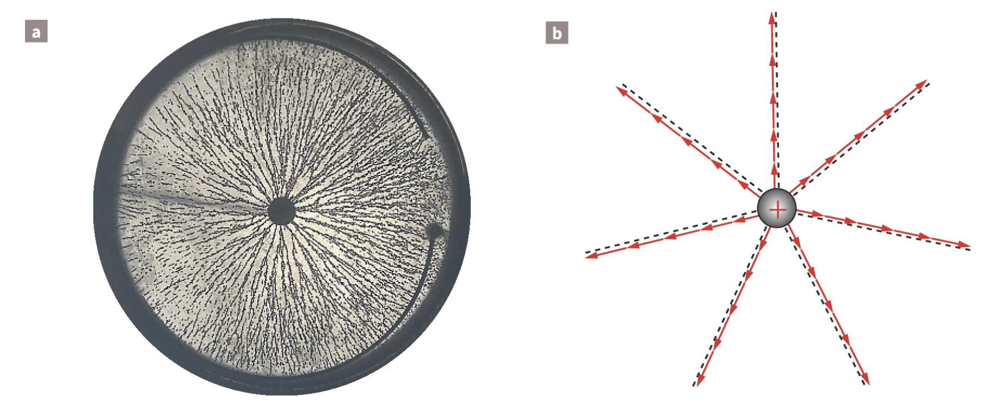
Die Grießkörner machen die Feldstruktur sichtbar. Im Modellbild zeigen die Feldlinien radial nach außen, weil die felderzeugende Ladung positiv ist.
Baue eigene Ladungsanordnungen und untersuche, wie sich ihre elektrischen Felder überlagern. Du kannst positive und negative Punktladungen sowie geladene Platten auf die Fläche setzen. Schalte die Feldlinien ein, um die Richtung des Feldes zu verfolgen. Die Äquipotenziallinien zeigen Orte gleichen elektrischen Potenzials.
Der violette Pfeil zeigt die Feldrichtung an der Position deines Zeigers. Feldlinien beginnen an positiven Ladungen und enden an negativen Ladungen. Äquipotenziallinien stehen überall senkrecht auf den Feldlinien. Ihre berechneten Werte sind in dieser Darstellung relativ; entscheidend sind Form und räumlicher Verlauf.
In jedem Punkt eines elektrischen Feldes wird auf eine Probeladung eine Kraft ausgeübt. Feldlinien zeigen die Richtung der elektrischen Feldstärke. Sie beginnen an positiven Ladungen und enden an negativen Ladungen.
Bei einer einzelnen Punktladung entsteht ein radialsymmetrisches Feld. Bei zwei entgegengesetzten Ladungen entsteht ein Dipolfeld: Feldlinien beginnen an der positiven Ladung und enden an der negativen. Zwischen zwei großen, parallelen Platten entsteht im Inneren näherungsweise ein homogenes Feld.
Ein homogenes Feld hat an jedem Ort im betrachteten Bereich dieselbe Richtung und denselben Betrag. Das ist idealisiert, aber im Inneren eines Plattenkondensators oft eine gute Näherung. Am Rand biegen die Feldlinien nach außen ab; dort ist das Feld nicht mehr perfekt homogen.
Im idealen Plattenkondensator erkennst du das homogene Feld daran, dass Feldlinien und Äquipotenziallinien jeweils parallel und gleichmäßig voneinander entfernt sind. Die Feldlinien zeigen überall in dieselbe Richtung, die Äquipotenziallinien stehen dazu senkrecht.
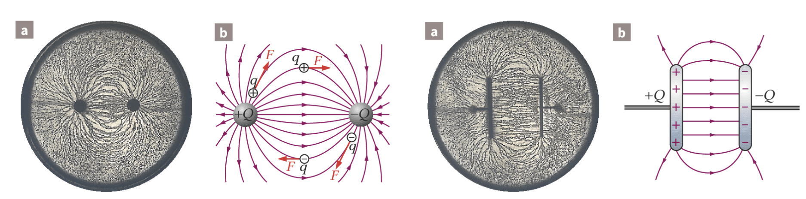
Links verbinden die Feldlinien eine positive und eine negative Ladung: Das ist ein Dipolfeld. Rechts sind die Linien zwischen den Elektroden fast parallel und gleich dicht: Dort ist das Feld näherungsweise homogen. Linien gleichen Potenzials würden im homogenen Bereich parallel zu den Platten liegen.
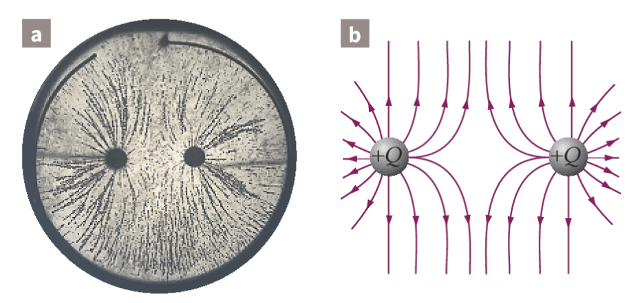
Beide Ladungen sind positiv. Feldlinien beginnen an positiven Ladungen und weichen zwischen den Ladungen aus. Zwischen gleichnamigen Ladungen entsteht kein verbindendes Feldlinienbild wie beim Dipol.
Metalle enthalten frei bewegliche Elektronen. Befindet sich eine geschlossene leitende Hülle in einem äußeren elektrischen Feld, bewegen sich diese Elektronen zunächst. Auf der Außenfläche entstehen Influenzladungen. Deren Feld überlagert das äußere Feld so, dass im Metall selbst schließlich (E=0) gilt. In einer vollständig umschlossenen, ladungsfreien Höhlung ist dann ebenfalls kein elektrostatisches Feld vorhanden.
Diese Abschirmung nennt man Faraday-Käfig. Die Ladungen verschwinden nicht, sondern verteilen sich auf der äußeren Oberfläche neu. Eine Erdung ist für die Feldfreiheit einer geschlossenen, ladungsfreien Höhlung nicht notwendig. Sie legt jedoch das elektrische Potenzial des Käfigs fest und ermöglicht, dass Ladung zur Erde abfließt oder von dort zufließt.
Feldlinien treffen eine leitende Oberfläche im elektrostatischen Gleichgewicht senkrecht. Hätten sie eine Komponente parallel zur Oberfläche, würden die Elektronen weiterbewegt und es läge noch kein Gleichgewicht vor.
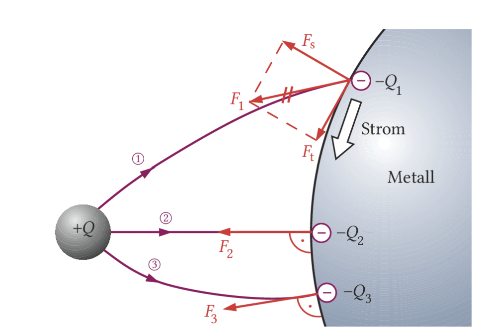
Freie Elektronen werden an der Metalloberfläche verschoben, solange es eine Kraftkomponente entlang der Oberfläche gibt. Im Gleichgewicht treffen Feldlinien senkrecht auf die Metalloberfläche.
Die Simulation startet mit einer geschlossenen Metallhülle. Schalte auf Metallgitter um und vergrößere die Öffnungen. Vergleiche außerdem den geerdeten und den ungeerdeten Leiter. Achte darauf, welche Aussage sich auf die Feldstärke und welche sich nur auf das elektrische Potenzial bezieht.
Bei einem Blitz fließt der größte Teil des Stroms über die leitende Außenhaut des Fahrzeugs. Der Schutz entsteht durch die zusammenhängende Metallhülle, nicht durch die Gummireifen. Im Innenraum solltest du während eines Gewitters keine leitenden Teile berühren, die mit der Außenhaut verbunden sind. Ein Cabriolet mit offenem Dach bildet dagegen keine geschlossene leitende Hülle.
Auch Flugzeugrümpfe und abgeschirmte Messleitungen nutzen dieses Prinzip. Ein Drahtgeflecht kann genügen, wenn seine Maschen für die jeweilige Anwendung klein genug und alle Teile gut leitend miteinander verbunden sind. Für zeitlich veränderliche Felder hängt die Abschirmwirkung zusätzlich von der Frequenz, dem Material und der Dicke der Hülle ab.
Hier bearbeitest du die rechnerischen Aufgaben aus dem Text. Schreibe deine Rechenwege sauber auf: gegebene Größen, Umrechnung, Formel, Einsetzen, Ergebnis mit Einheit.
\(F_\mathrm{el}=qE\), \(E=\frac{F_\mathrm{el}}{q}\), \(q=\frac{F_\mathrm{el}}{E}\)
Diese Umstellungen nutzt du, je nachdem welche Größe gesucht ist.
\(|q|E=mg\)
Ein geladener Körper schwebt, wenn elektrische Kraft und Gewichtskraft betragsmäßig gleich groß und entgegengesetzt gerichtet sind.
Diese Aufgaben trainieren das, was man bei elektrischen Feldern besonders häufig braucht: Feldlinienbilder lesen, Kraftvektoren einzeichnen und begründen, wo das Feld stärker ist.
Bearbeite die Aufgaben, bevor du die Lösungen oder Hinweise nutzt. Entscheidend ist nicht nur das Ergebnis, sondern deine Begründung.
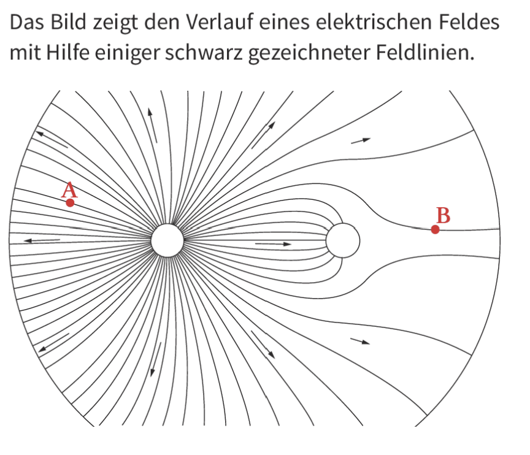
Vergleiche Punkt A und Punkt B. Achte auf Feldliniendichte, Feldrichtung und darauf, dass ein Elektron entgegen der Feldrichtung beschleunigt wird.
Du hast jetzt Ladungen, elektrische Kräfte, Feldstärke, Feldlinien und Feldbilder erarbeitet. Die Fortsetzung behandelt elektrische Energie, Potenzial, Spannung und den Kondensator als Ladungsspeicher.
Inhaltlich orientiert an Dorn/Bader: Physik Kursstufe, Kapitel 1 „Das elektrische Feld“, sowie Bildungsplan BW Physik V3.0. Der Text wurde für diese interaktive Schülerseite neu formuliert.